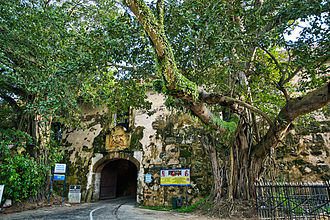
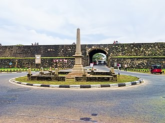
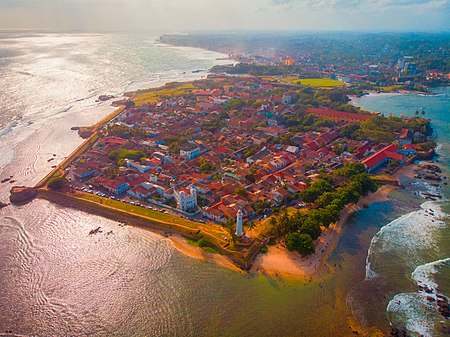
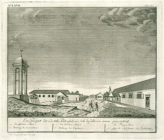
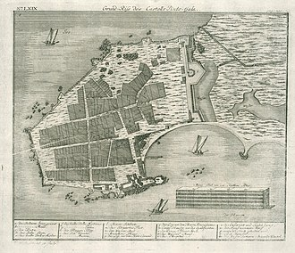

About
Galle Fort in the Bay of Galle on the southwest coast of Sri Lanka, was built first in 1588 by the Portuguese, then extensively fortified by the Dutch ...
Built by: Portuguese and Dutch
Built: 1584; 439 years ago and 1684;
Galle Fort, in the Bay of Galle on the southwest coast of Sri Lanka, was built first in 1588 by the Portuguese, then extensively fortified by the Dutch during the 17th century from 1649 onwards. It is a historical, archaeological and architectural heritage monument, which even after more than 432 years maintains a polished appearance, due to extensive reconstruction work done by Archaeological Department of Sri Lanka. The fort has a colourful history, and today has a multi-ethnic and multi-religious population. The Sri Lankan government and many Dutch people who still own some of the properties inside the fort are looking at making this one of the modern wonders of the world. The heritage value of the fort has been recognized by the UNESCO and the site has been inscribed as a cultural heritage UNESCO World Heritage Site under criteria iv, for its unique exposition of "an urban ensemble which illustrates the interaction of European architecture and South Asian traditions from the 16th to the 19th centuries." The Galle Fort, also known as the Dutch Fort or the "Ramparts of Galle", withstood the Boxing Day tsunami which damaged part of coastal area Galle town. It has since been restored.
Layout
The urban area within the fort has a rectangular grid pattern of streets full of low houses with gables and verandahs in the Dutch colonial style. It has a well laid out road network with the peripheral roads aligned parallel to the fort's ramparts. The fort area also has a number of historic churches, mosques, commercial and government buildings. Some of the locals stroll along the walls of the fort in the evenings. Many buildings are of Dutch vintage with street names also in Dutch. The sewerage system built in the fort area ensured that the city sewerage was flushed into the sea during the tidal cycle. The Dutch exploited the musk rats in the sewers by exporting them to extract musk oil.
learn moreGeography
Galle Fort is in Galle, which is located at the extreme southwest corner of the island, in the southwest coast of Sri Lanka, where the shoreline turns east towards Matara and Tangalle. The fort, like most of the forts in Sri Lanka, is built on a small rocky peninsula, belonging to the sea as much as to the land. As it exists today, it covers an area of 52 hectares (130 acres).
learn moreLandmarks
- Groote Kerk (Dutch Reformed Church)
- New Orient Hotel
- Breadfruit tree
- Old Dutch government house
Other Landmarks
Other landmarks are the old Dutch government house, the residence of the Commander, the great warehouse near the old gate, built around 1669 to store spices and ship equipment (which now houses the National Maritime Archaeology Museum), the Old Dutch Hospital, the Meeran Jumma Mosque, built in 1904, the Buddhist temple built at the site of the Portuguese Roman Catholic church, the All Saints Anglican Church built in 1871, the 1882 Clock Tower, the Clan House and the 1939 Galle Lighthouse.
Gallery




